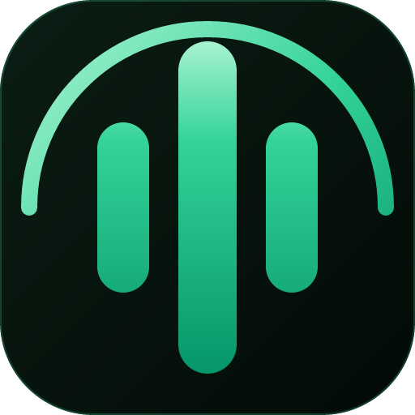
FewTypeFewType 把三大日常场景放进一个轻量 Windows 应用：说话代替打字、让电子书用自然人声朗读、把长稿子变成语音文件。免费开源——你自己连接所选的 AI 服务，无订阅、不捆绑密钥。
三大场景，三类不同的人。你大概率至少对号入座一个。
任意窗口按全局热键（Ctrl+Win 或双击 Ctrl），开口就说，文字落在光标所在处。
浏览器扩展在页面里把电子书读给你听（Google Play 图书、Koodo Reader）。自然的人声，不是机器腔。
粘贴一长段脚本、选个音色、得到一段自然语音的音频文件。它是附属功能，但对做口播内容的人是救命稻草。
苔绿暗夜、霜白、暮蓝、余烬——挑一个合你工作氛围的。
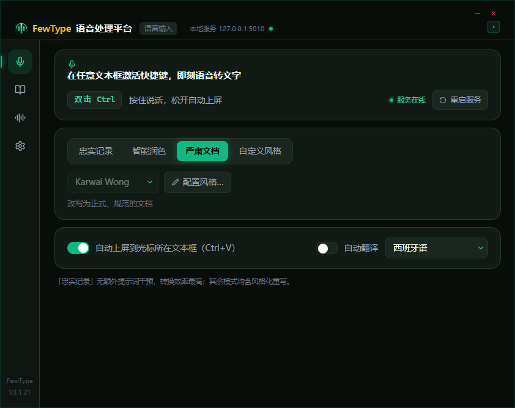
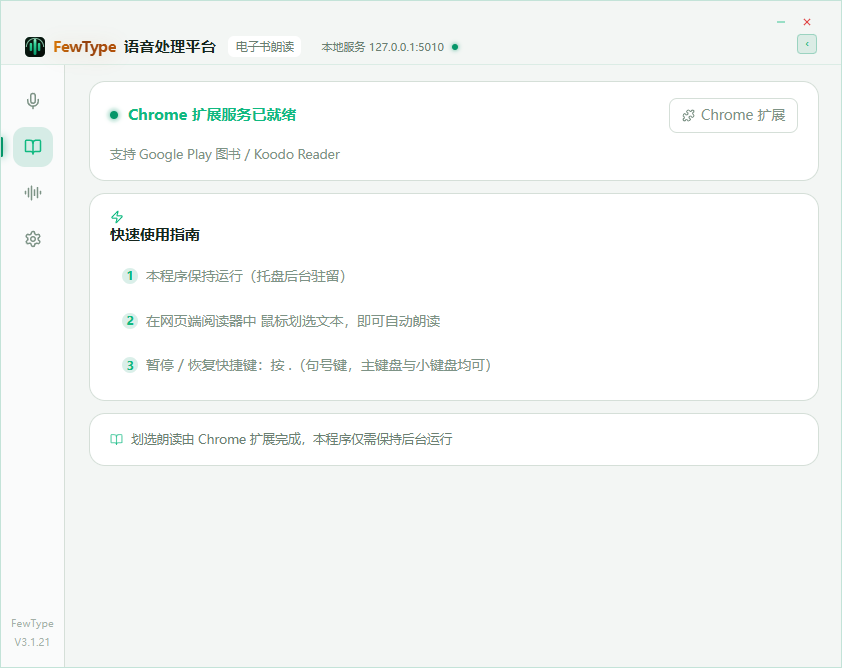
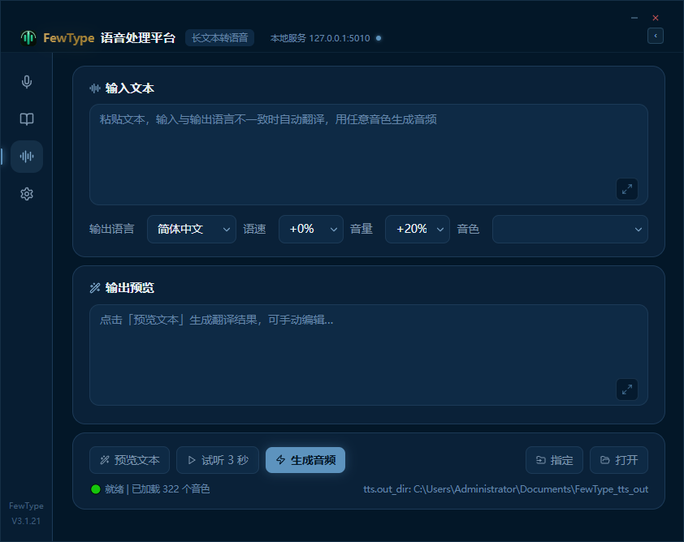
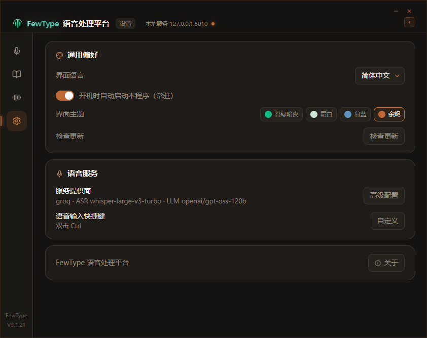
FewType 是个人项目，不假装是成熟团队产品，这也是它的诚意所在。
在任意应用里按全局热键、开口说话，文字就落在光标所在处。不止于听写——FewType 还能在文字上屏前，按你自定义的口吻改写（内置风格示范可作起点），或翻译成另一种语言。
聊天窗口、浏览器、终端、文档——一个热键（Ctrl+Win，或双击 Ctrl）开始录音，语音直接打到光标处。不用切换应用，不用复制粘贴。
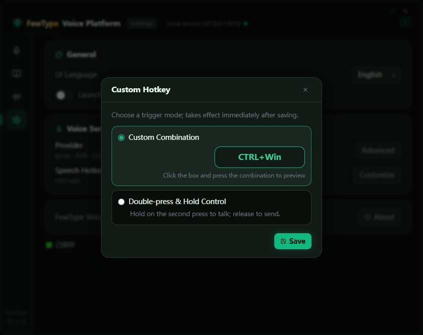
用中文说，得到英语、西班牙语、法语、德语、日语或韩语直接进输入框。翻译直达屏幕，不需要再开第二个窗口。
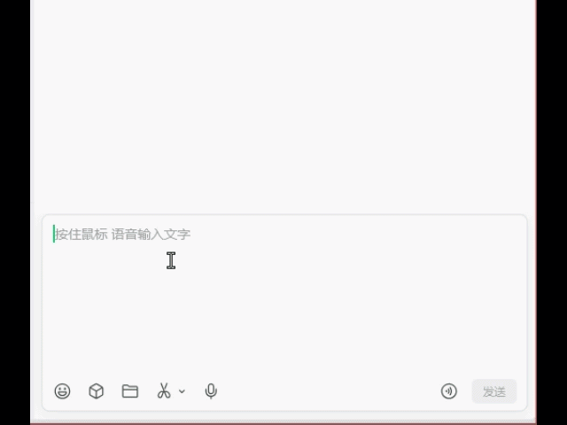
告诉 FewType 你想要的声音，或让 AI 帮你生成提示词：幽默、冷感、文学感，随你定义。"Karwai Wong"（王家卫）把普通句子变成电影感独白，"Formal"（正式）把零散口述整理成编号文档——它们只是内置示范，真正的控制权在你手里，改写在上屏前完成。
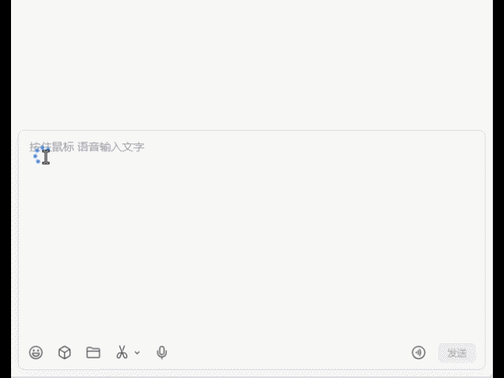
一口气说好几件事，内置的 Formal 风格会自动把它们整理成编号条目——一句随口的道歉，变成一份可直接使用的正式说明。
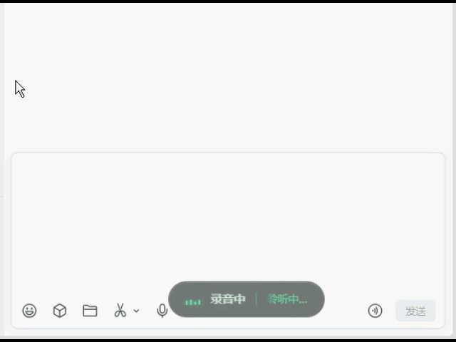
其实只要两步。密钥只存在你的电脑里，绝不随安装包捆绑。
浏览器扩展用自然的人声朗读你的电子书——句子连贯流畅，没有机器味。支持 Google Play 图书与 Koodo Reader。
工作原理：主程序负责 AI 语音引擎，浏览器扩展负责一键抓取网页图书朗读。
FewType 使用自然神经音色，配合调优过的分段与合成逻辑，段落读得连贯流畅——像真正的朗读者那样。
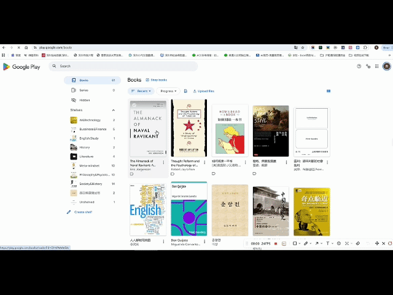
长时间专注看书，眼睛很快就累。做家务、任何眼睛忙不过来的碎片时间，用耳朵接着读。
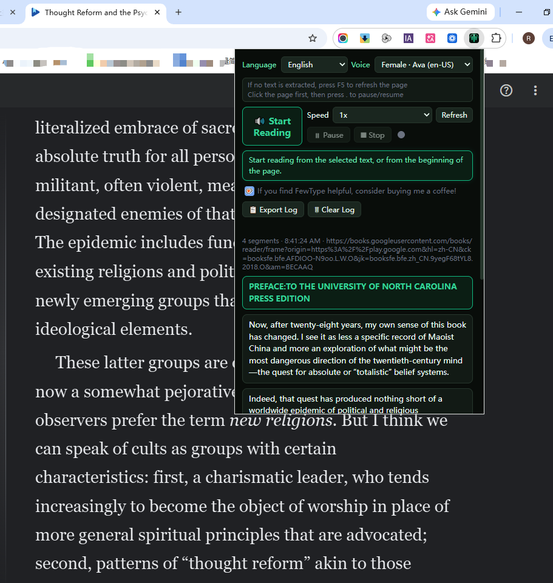
朗读器会按书的文字自动匹配音色——简体书用简体音色、繁体书用繁体音色，多音字也读得更准。
装一次，然后在浏览器里加载扩展，就这两步。
粘贴长稿、选个音色、得到干净的音频文件。为内容创作者省下大把录音时间的附属功能。
粘贴草稿，选择语言和音色，点生成——应用智能分段并合成为单个音频文件，输出到你指定的文件夹。
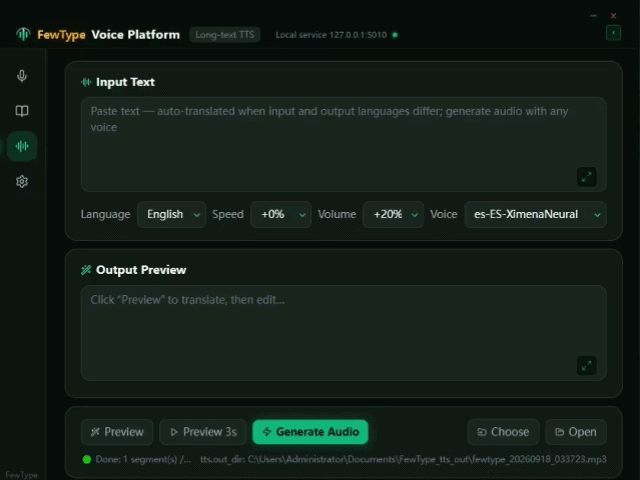
输入和输出语言不一致？FewType 会先翻译再朗读——粘贴英文，直接得到西班牙语配音，不用手动翻译。
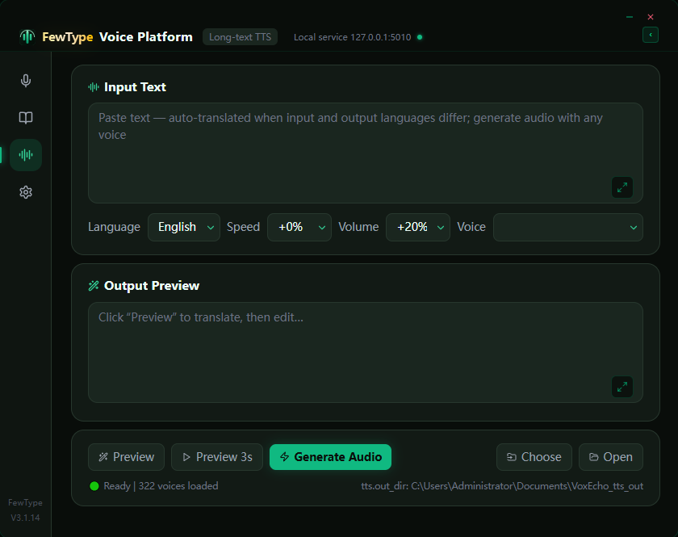
上百种神经音色覆盖多种语言，语速音量可调。先试听再生成，最后导出成文件。